Questão 1 · Isquemia Mesentérica Crônica · Cirurgia · 4000182192Homem de 64 anos com quadro de perda acentuada de peso (20 kg em 6 meses), astenia e dor abdominal pós prandial. Possui hipertensão arterial sistêmica descontrolada e tabagismo ativo. Ao exame físico, apresenta-se em regular estado geral, hipocorado e hidratado. Peso atual 47 kg, Abdome escavado sem dor à palpação no momento. Aorta abdominal palpável e pulsátil, porém endurecida. Sopro sistólico audível em mesogástrio sem alteração com a respiração. Pulsos em membros inferiores presentes e simétricos. Realizou tomografia de abdome abaixo: Qual o diagnóstico mais provável?

A Síndrome do ligamento arqueado mediano.
B Neoplasia de cabeça de pâncreas.
C Compressão duodenal por aneurisma de aorta abdominal.
D Isquemia mesentérica crônica.
Questão 2 · Cirurgia · Síndrome Compartimental · 4000182191Mulher de 54 anos com queixa de frialdade, cianose não fixa, parestesia e dor súbita em pé e perna direita há 8 horas. Possui de antecedentes uma prótese valvular aórtica mecânica com controle irregular da anticoagulação com Varfarina. Foi submetida a embolectomia de emergência para revascularização de membro inferior direito, bem-sucedida. Uma hora após do procedimento, já na recuperação, apresentou recrudescimento da dor no membro, edema de panturrilha e perda de pulsos que haviam sidos restabelecidos com a cirurgia. Qual o provável diagnóstico?
A Síndrome compartimental.
B Flegmasia cerúlea dolens.
C Novo episódio embólico.
D Trombose arterial devido a lesão iatrogênica pelo cateter de Fogarty.
Questão 3 · Pseudoobstrução Colônica Síndrome de Ogilvie · Cirurgia · 4000182190Homem de 90 anos, com internação prolongada e imobilização por tratamento cirúrgico de fratura do colo do fêmur. Estava em antibioticoterapia para tratamento de pneumonia nosocomial e passou a apresentar parada de eliminação de atos e fezes associada à distensão abdominal dolorosa. Ao exame, o estado geral era bom, entretanto o abdome era distendido, doloroso à palpação super cial, hipertimpânico e sem sinais de irritação peritoneal. A radiogra a simples de abdome mostrou importante distensão gasosa de todo o cólon. Qual o provável diagnóstico e a melhor conduta indicada neste caso?
A Íleo metabólico; compensação dos distúrbios hidroeletrolíticos e dieta laxativa.
B Megacólon funcional; colectomia total com ileostomia temporária e sepultamento do reto.
C Pseudo obstrução colônica aguda; descompressão endoscópica do cólon.
D Volvo colônico; colonoscopia descompressiva e compensação dos distúrbios e hidroeletrolíticos.
Questão 4 · Escroto Agudo · Cirurgia · 4000182189Homem, 21 anos, vem a um serviço de pronto atendimento com queixa de dor no testículo direito, de início insidioso, com progressão há um dia, associada à disúria. Exame físico: hiperemia da bolsa escrotal, dor á palpação do testículo e endurecimento do epidídimo. Sinal de Prehn positivo. Qual a melhor conduta no pronto atendimento?
A Analgesia, colher urina I, urocultura e encaminhar paciente para serviço especializado de urologia.
B Encaminhar paciente para realizar ultrassonografia com Doppler e avaliar do fluxo sanguíneo testicular
C Analgesia e encaminhar paciente para exploração cirúrgica de emergência
D Tratamento clínico com anti-inflamatório, antibioticoterapia empírica e reavaliação entre 7 e 10 dias.
Questão 5 · Intussuscepção Intestinal · Cirurgia · 4000182188Menino, 6 meses de idade. Há 6 horas iniciou quadro de dor abdominal em cólica, intensa, com período de acalmia. Evoluiu com piora da dor apresentando episódios mais frequentes com as mesmas características e vômitos. Na ocasião da troca das fraldas, informante refere sangue e muco. Exame físico: estado geral preservado, sem dor na ocasião do exame. Hidratado, corado, eupneico, afebril. Abdome globoso, ácido, sem distensão. Sinal de Dance positivo. Imediatamente encaminhado para exame contrastado, enema opaco. Considerando o provável diagnóstico e a conduta (enema opaco) proposta, qual o resultado esperado?
A Identificação da zona de transição confirmando Hirschsprung.
B Melhora clínica da enterocolite pela descompressão.
C Confirmação diagnóstica de volvo intestinal.
D Redução hidrostática do intussuscepto.
Questão 6 · Doença degenerativa discal e hérnia discal · 4000182187Homem de 32 anos, sem comorbidades prévias, queixa se de lombalgia de início súbito com irradiação para membro inferior esquerdo há 7 dias, contínua, melhora parcial com analgésicos. Ao exame físico, além de dor no membro citado (principalmente quando elevado em posição reta acima de 40 graus), apresenta outra nítida alteração semiológica ipsilateral. Realizou o exame de ressonância magnética em anexo. Qual a alteração vista no exame neurológico?
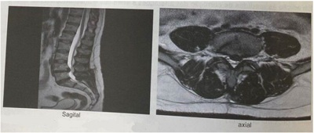
A Hipoestesia na face posterior da coxa.
B Paresia da extensão do hálux.
C Pé caído.
D Hiporreflexia do aquileu.
Questão 7 · Estimativa da Superf ície Corpórea Queimada e Circulação · Cirurgia · 4000182186Homem de 36 anos, 100 kg, foi vítima de queimaduras por combustão de álcool ao acender churrasqueira. Após 2 horas, foi admitido no pronto-socorro de hospital terciário, trazido pelo SAMU, tendo recebido no transporte 1.000 ml de solução de ringer lactato. Ao exame: consciente e orientado, Glasgow 15. saturação de oxigênio em ar ambiente de 95%, ventilação com murmúrio vesicular presente e simétrico, frequência respiratória de 18 ipm, frequência cardíaca de 86 bpm, pressão arterial de 110 x 70 mmHg, queimaduras de segundo e terceiro graus em metade do tronco posterior e todo membro inferior direito. De acordo com a 10ª edição do ATLS, como deve ser realizada a reposição volêmica deste paciente nas próximas horas?
A 2.700 ml de solução cristaloide nas próximas 6 horas.
B 2.700 ml de solução cristaloide nas próximas 8 horas.
C 1.700 ml de solução cristaloide nas próximas 6 horas.
D 1.700 ml de solução cristaloide nas próximas 8 horas.
Questão 8 · Clínica e tipos histológicos · Dermatologia · Tratamento e conduta · 4000182185Mulher de 50 anos procura cirurgião plástico preocupada com lesão papular hipercrômica na face, com cerca de 2 mm de espessura, simétrica, bordos regulares, coloração homogênea, diâmetro de 5 mm e crescimento lento. Qual a melhor conduta?
A Exérese com margem de 5 mm e pesquisa do linfonodo sentinela cervical.
B Eletrocauterização.
C Crioterapia.
D Exérese com margem de 2 mm e exame anatomopatológico.
Questão 9 · Lesão da Árvore Traqueobrônquica · Cirurgia · 4000182184Mulher, 20 anos, vítima de ferimento por arma branca em hemitórax esquerdo, na altura do 3º EIC junto à linha axilar anterior; chega dispneica à sala de trauma com saturação de O2 = 88%. O tórax foi drenado com dreno tubular e sistema coletor selo d'água. A saturação após a drenagem pleural = 90%. Realizado RX de tórax ainda na sala de trauma que mostra dreno bem posicionado com pneumotórax persistente, apesar do coletor borbulhar bastante. Qual a próxima conduta?
A Colocar um segundo dreno de tórax.
B Tomografia computadorizada de tórax.
C Broncoscopia de urgência.
D Trocar o dreno de tórax.
Questão 10 · Apendicite Aguda Complicada · Apendicite Aguda · Cirurgia · 4000182183Mulher de 70 anos, com dor abdominal inicialmente no andar inferior do abdome que migrou para hemi abdome direito e, principalmente, na fossa ilíaca direita associada a cerca de 5 evacuações diárias sem sangue ou muco há 15 dias. Há 12 dias, em serviço externo, iniciou tratamento para infecção do trato urinário com antibiótico. Houve discreta melhora e foi submetida a exame de imagem que motivou o encaminhamento para hospital terciário. Na admissão estava consciente e orientada, desidratada +/4+, frequências cardíaca de 78 batimentos por minuto e respiratória de 18 incursões por minuto e saturação de oxigênio de 95%. O abdome era globoso, distendido, com ruídos hidroaéreos hipoativos, massa palpável e dolorosa no hemi abdome direito e com reação de defesa à palpação de fossa ilíaca direita. A tomogra a revelou volumosa coleção parcialmente delimitada com focos gasosos com extensão para o músculo iliopsoas, a cavidade e a parede abdominal, com provável fecalito no interior. Em adição às medidas de correção das alterações sistêmicas e antibioticoterapia, qual a abordagem a ser adotada?

A Drenagem percutânea.
B Laparotomia exploradora.
C Drenagem ecoendoscópica
D Laparoscopia exploradora.
Questão 11 · Tratamento · Cirurgia · 4000182182Homem, 25 anos, vítima de queda de moto, trazido pelo SAMU, é admitido na sala de trauma de um hospital referência, confuso e com dor abdominal. Exame físico: saturação de O2 = 94%. FC = 130 bpm, PA = 90 x 60 mmHg, Escala de Coma de Glasgow = 14. Após reanimação volêmica com 1L de solução cristaloide e infusão de dois concentrados de hemácias e um PFC. passou a apresentar FC = 105 bpm e PA = 100 x 70 mmHg. Realizou tomogra a computadorizada de corpo inteiro, que evidenciou lesão hepática grau V. com blush e volumoso hemoperitôneo. Qual a conduta mais adequada?
A Manter paciente em observação na sala de trauma nas primeiras 24 horas.
B Encaminhar paciente para tratamento não cirúrgico em leito intensivo.
C Encaminhar paciente para tratamento cirúrgico.
D Encaminhar paciente para a embolização.
Questão 12 · Tratamento · Cirurgia · 4000182181Em uma avaliação médica de rotina de puericultura, notou-se em menino 2 anos de idade ausência do testículo esquerdo na bolsa. Já ao nascer o pediatra orientou os pais que até os dois anos o testículo poderia descer espontaneamente. O paciente encontra se saudável e o exame físico geral não apresenta alterações. O testículo direito é tópico e normotró co. Qual a próxima medida diagnóstica a ser tomada?
A Descartar testículo retrátil.
B Solicitar ressonância magnética de abdome e pelve.
C Solicitar US abdominal.
D Prescrever gonadotrofina coriônica.
Revisar: possível letra faltando em enunciado
Questão 13 · Hemorragia Subaracnoidea HSA · Neurologia · Cef aleia Induzida por Hemorragia Subaracnoidea · 4000182180Paciente de 23 anos, previamente hígida, é trazida ao pronto-socorro devido queixa de cefaleia súbita e de forte intensidade. Familiares negam perda de consciência, assim como negam episódios prévios semelhantes. Ao exame: sonolenta e confusa (Glasgow 13), pupilas isocóricas e fotorreagentes, sem dé cits neurológicos focais, apresentando rigidez de nuca (+2/+4), afebril e estável hemodinamicamente. Qual a medida inicial indicada?
A Tomografia computadorizada de crânio.
B Punção lombar diagnóstica.
C Administração de solução salina hipertônica 3%.
D Intubação orotraqueal seguida por hiperventilação controlada.
Questão 14 · Neurologia · Sinais e sintomas · 4000182179Criança de 1 mês de idade, nascida de parto cesárea sem intercorrências, com quadro de irritabilidade e baixo ganho de peso. A mãe teve diagnóstico de toxoplasmose confirmado durante a gestação. Ao exame físico, encontra-se desperto e reativo, com peso de 2400 g e perímetro craniano de 42 cm; fontanelas abauladas, com mobilidade ocular normal. Seu exame de ultrassonografia de crânio transfontanelar encontra-se abaixo. Qual é a melhor conduta terapêutica?
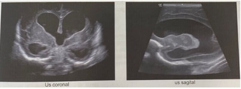
A Terceiroventriculocisternostomia endoscópica
B Acetazolamida oral
C Punção lombar de alívio
D Derivação ventriculoperitoneal
Questão 15 · Neuroimagem em Epilepsia · Crise Única e Crise Sintomática Aguda Provocada · Neurologia · 4000182178Paciente de 76 anos, previamente hipertensa, é admitida no pronto atendimento com história de crise convulsiva inédita há 2 horas. Familiares negam episódios prévios, assim como referem que a crise convulsiva foi autolimitada, com ocorrência de liberação esfincteriana e abalos musculares tônico clônicos. Ao exame: confusa e sonolenta (Glasgow 13), pupilas isocóricas e bradirreagentes e hemiparesia dimidiada à esquerda. Solicitada tomogra a computadorizada de crânio sem e com administração de contraste endovenoso (vide guras A e B, respectivamente). Tomogra a computadorizada de crânio sem e com contraste Qual o diagnóstico mais provável?
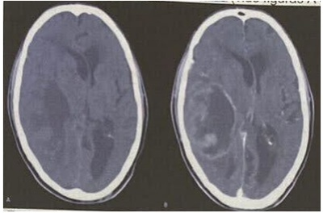
A Acidente vascular cerebral isquêmico.
B Glioblastoma.
C Hemorragia intraparenquimatosa.
D Meningioma.
Questão 16 · Protocolo de transf usão maciça · Cirurgia · 4000182177Homem, 20 anos, vítima de acidente automobilístico em rodovia há 40 minutos, com trauma de crânio evidente, trazido pelo SAMU; chega à sala de trauma de um hospital terciário com intubação traqueal em razão do rebaixamento do nível de consciência. A equipe de atendimento pré-hospitalar informou que o paciente apresentava sinais de choque hipovolêmico e infundiu até a chegada ao hospital 1 litro de solução cristaloide. Exame físico: saturação de O₂ = 95%, FC= 140 bpm, PA = 80 x 60 mmHg, ECG = 3. Qual a melhor forma de tratar o choque hemorrágico deste paciente?
A Infundir hemácias e plasma fresco em proporções altas, sem necessidade de aguardar exames laboratoriais e buscar foco de sangramento.
B Infundir 1 litro de cristaloide, aguardar exames laboratoriais para iniciar transfusão hemácias e buscar foco de sangramento.
C Infundir 1 litro de cristaloide, realizar hipotensão permissiva, iniciar transfusão de hemácias e buscar foco de sangramento.
D Infundir hemácias, realizar hipotensão permissiva, aguardar exames laboratoriais para infundir plasma fresco e buscar foco de sangramento.
Questão 17 · Etiologia · Cirurgia · Coledocolitíase · 4000182176Mulher de 32 anos, admitida com dor no andar superior do abdome há 12 horas. Achados físicos: icterícia +/4+, temperatura de 37 °C, frequências respiratória e cardíaca de 20 incursões e 100 batimentos por minuto, respectivamente, distensão e dor abdominal no andar superior à palpação super cial e profunda. Achados laboratoriais: Glóbulos brancos: 16.000/ml (valor de referência de 4.000 a 10.000/ml), amilasemia de 1.200 U/dl (valor de referência até 125 U/L), bilirrubinas totais e direta de 4,6 e 3,2 mg/dl (valor de referência de até 1,10 e 0,30 mg/dL, respectivamente). As imagens foram obtidas durante o tratamento cirúrgico realizado após uma semana da admissão. Dentre os cálculos observados, as manifestações clínicas e laboratoriais e os achados radiológicos estão associadas, provavelmente, ao:
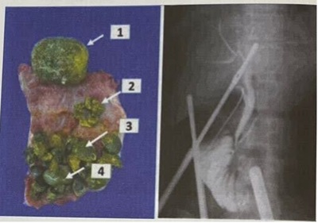
A 3
B 4
C 1
D 2
Questão 18 · Cardiologia · Indicações de revascularização · 4000182175Homem de 66 anos, diabético, portador de coronariopatia obstrutiva e doença arterial obstrutiva periférica, ambas ateroscleróticas, creatinina de 1,4 mg/dl, fração de ejeção do ventrículo esquerdo de 30%, com 22% de miocárdio isquêmico pela cintilogra a, com lesão de 55% de tronco de artéria coronária esquerda e obstruções maiores que 70% em ramo marginal da circunflexa, descendente anterior proximal, segundo ramo diagonal e porção distal da coronária direita que é dominante. O Syntax Score I é de 38. Apresenta angina classe III segundo a Sociedade Canadense de Cardiologia. Qual alternativa aponta para a conduta que tem maior probabilidade de oferecer maior sobrevida em 4 anos?
A Cirurgia de revascularização do miocárdio.
B Tratamento paliativo.
C Tratamento medicamentoso otimizado apenas.
D Intervenção Coronária Percutânea.
Questão 19 · Tratamento da dissecção aórtica tipo A · Tratamento da dissecção aórtica tipo B · Cardiologia · 4000182174As guras abaixo mostram os achados radiológicos de dois pacientes masculinos, Paciente 1 e Paciente 2, atendidos no serviço médico de urgência com história de dor súbita de forte intensidade em região anterior do tórax. Ambos têm 65 anos de idade e são hipertensos de longa data. Ambos receberam beta bloqueador e analgésico opioide na admissão e estão hemodinamicamente estáveis. Após medicados, a pressão arterial de ambos é de 130/80 mmHg, a frequência cardíaca de 56 bpm, ambos apresentaram redução significativa da dor e não apresentaram intercorrências. Das alternativas abaixo, qual mostra a conduta mais adequada para cada paciente?
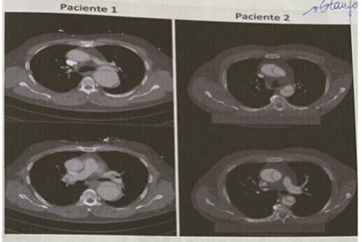
A O Paciente 2 deve ser submetido a tratamento medicamentoso
B O Paciente 1 deve ser submetido a tratamento endovascular imediato.
C Paciente 1 deve ser submetido a tratamento medicamentoso.
D O Paciente 2 deve ser submetido a tratamento endovascular imediato.
Questão 20 · Tratamento · Cirurgia · 4000182173Homem de 65 anos de idade, diabético, apresenta-se no pronto-socorro com uma úlcera na região plantar do pé esquerdo há 6 semanas. Sem febre, com sinais vitais estáveis e com contagem de leucocitos de 9000 cels/mm³. A radiogra a simples do pé demonstra destruição óssea significativa do primeiro e do segundo metatarsos distais. Ao exame, há uma ferida aberta de 3 x 4 cm sobre o antepé, com eritema circundante moderado menor que 0,5 cm. Pulsos distais ausentes, a pele do pé é brilhante e há perda dos fâneros até a metade da perna. O ultrassom mostra uma coleção discreta de uido plantar sobre a primeira e a segunda cabeça do metatarso. O indice tornozelo braço (ITB) do lado esquerdo é 0,5. Foi internado e prescrito antibiótico endovenoso. Qual das alternativas a seguir descreve é a melhor sequência de manejo cirúrgico para este paciente?
A Revascularização e posterior desbridamento.
B Desbridamento e curativo com pressão negativa.
C Desbridamento e oxigenioterapia hiperbárica.
D Amputação do primeiro e segundo raio e posterior revascularização.
Questão 21 · Esclerose sistêmica · Reumatologia · Fenômeno de Raynaud · 4000182172Mulher, 52 anos, há três anos apresenta arroxeamento, formigamento e queimação em dedos das mãos ao contato com superfícies ou ambientes frios. Refere disfagia para alimentos sólido, com frequente queimação retroesternal pós alimentar. Exame físico: bom estado geral; redução da elasticidade da pele em dorso das mãos; murmúrio vesicular bem distribuído, com estertores em velcro nas bases pulmonares. Teste de contato com gelo resultou na imagem abaixo: Qual medicação está indicada para a alteração mostrada na imagem?
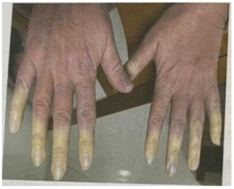
A Metotrexato.
B Nifedipino.
C Varfarina.
D Prednisona.
Questão 22 · Reumatologia · Artrite psoriásica · 4000182171Mulher, 52 anos, refere dor e rigidez em região lombar pela amanhã há 1 ano. Ambos os sintomas são aliviados, parcialmente após horas e atividade ou uso de AINEs. Refere dor em calcanhares há 3 meses. Nega doenças e tratamentos. Exame físico: bom estado geral, corada; sem lesões cutâneas; unhas: onicólise e mancha de óleo nos pés; teste de Patrick positivo à esquerda. Os pés são mostrados na foto abaixo: Qual diagnóstico é mais provável?
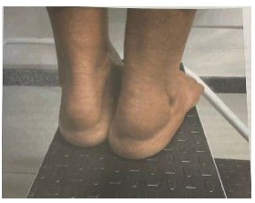
A Gota tofácea crônica.
B Artrite psoriásica.
C Artrite reumatoide.
D Espondilite anquilosante.
Questão 23 · Esclerose sistêmica · Reumatologia · 4000182170Mulher, 41 anos, refere dispneia progressiva há 1 ano, atualmente ao andar 50 metros. Há 8 meses notou edema de membros inferiores. Refere que as mãos cam arroxeadas e em seguida esbranquiçadas, quando em contato com água gelada, e diz ter disfagia com engasgos há 3 anos. Exame físico: BEG, corada, hidratada, elasticidade da pele reduzida em membros e face. com diminuição da abertura oral. Murmúrio vesicular presente, simétrico, sem ruídos adventícios FR: 26 ipm. Sat 02: 87% em ar ambiente. Ritmo cardíaco regular com hiperfonese de B2. FC: 98 bpm. PA: 110 x 60 mmHg. Estase jugular a 45 graus. Qual sintoma adicional seria mais compatível?
A Síncope.
B Ortopneia.
C Hemoptise.
D Chiado.
Questão 24 · Trombolítico · Pneumologia · 4000182169Mulher, 67 anos, previamente hígida, internada por dispneia súbita, hemoptise e dor torácica há 1 hora. Tromboembolismo pulmonar foi confirmado por angiotomogra a de tórax, sendo iniciada anticoagulação plena com enoxaparina. A dispneia passou a ser dispneia passou a ser discreta, aos esforços. No terceiro dia de internação apresentou se em REG, descorada (+/4+), consciente. Murmúrio vesicular simétrico, sem ruídos adventícios FR: 30 ipm. Ritmo cardíaco regular, FC: 128 bpm. PA: 60 x 30 mmHg, má perfusão distal. Sem sinais neurológicos focais. Eletrocardiograma abaixo:
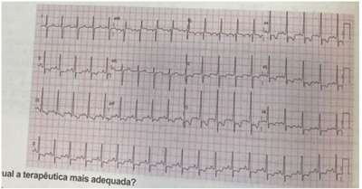
A Realizar cinecoronariografia
B Controle de frequência cardíaca.
C Trombólise com alteplase.
D Repetir angiotomografia.
Questão 25 · Etiologia · Insuf iciência Cardíaca · 4000182168Homem, 41 anos, trabalhador rural, hipertenso em uso irregular de anti-hipertensivos. Foi admitido em hospital com queixa de dispneia, ortopneia, edema de membros inferiores e palpitações há 1 mês além de oligúria há 2 dias. Feito o diagnóstico inicial de insu ciência cardíaca e tratado com furosemida e vasodilatadores, sem melhora do quadro. História de consumo prévio de 95 g de etanol/dia por 15 anos; parou há 4 meses, no decorrer dos quais perdeu 10 Kg. Exame físico: consciente, afebril, PA 130/75 mmHg, FC: 121 bpm, estase jugular, edema depressível generalizado, pulsos amplos extremidades quentes, sem nistagmo ou ataxia. Exames complementares revelam: derrame pleural bilateral, acidose lática, fração de ejeção do ventrículo esquerde de 77% (aferida por ecocardiograma). Qual a etiologia mais provável da insu ciência cardíaca?
A Deficiência de tiamina.
B Miocardite viral.
C Miocardiopatia alcoólica.
D Cardiopatia hipertensiva.
Questão 26 · Nef rologia · 4000182167Homem, 55 anos, hipertenso em uso de hidroclorotiazida 25 mg/dja e atenolol 50 mg 2x ao dia, refere edema de membros inferiores e redução do volume de diurese há 30 dias. Submetido a biopsia renal, cujos achados foram compatíveis com nefropatia por IgA. Exame físico: PA: 110 x 70 mmHg. FC: 65 bpm. Ausculta respiratória com crepitações em terço inferior bilateral. Edema de membros inferiores 3+/4+. Exames laboratoriais: Cr: 1,5 mg/d (taxa de ltração glomerular estimada: 45 mL/min/1.73 m²); Ur: 85 mg/dL, K: 5.0 mg/dL; urina rotina densidade: 1018, proteinas: 300 mg/dL, hemácias: 10/campo. Proteinúria de 24 h: 900 mg (volume urinário de 1000 mL). Qual medicação deve ser associada ao tratamento?
A Micofenolato mofetil.
B Ciclosporina.
C Prednisona.
D Losartana.
Questão 27 · Doença por lesões mínimas · Nef rologia · 4000182166Homem, 55 anos, teve infecção de vias aéreas superiores há 3 semanas, com melhora após uso de anti-inflamatório não esteroidal por 10 dias. Refere adinamia, redução do volume de diurese e edema de membros inferiores, progressivo, há 1 semana. Exame físico: PA= 140 x 90 mmHg, FC = 100 bpm. Ausculta: bulhas cardíacas rítmicas e hiperfonéticas, sem sopro: murmúrio vesicular presente, com crepitações em bases pulmonares. Exames laboratoriais Cr 3,0 mg/dL, Ur: 100mg/dL, Na: 140 mEq/L, K: 4,0 mEq/L, Ca: 7,5 mg/dL, albumina: 1,8 mg/ dL e dosagens de complemento C3 e C4 normais; urina rotina densidade: 1020, hemácias: 2/campo, leucócitos: 2/campo, proteínas: 500 mg/dL, lipídeos: 3+. Qual a hipótese mais provável?
A Glomerulonefrite aguda pós infecciosa.
B Nefrite intersticial aguda.
C Glomerulopatia por lesões mínimas.
D Nefropatia por IgA.
Questão 28 · Derrame Pleural · Pneumologia · 4000182165Homem, 17 anos, com adenomegalia, perda de peso e febre há 1 mês. Exame físico: linfonodos palpáveis em cadeias cervicais, axilares e inguinais, com 2 a 3 cm de diâmetro. Abdome: indolor, fígado e baço palpáveis. Ap. respiratório e cardiovascular sem alterações. Radiogra a da admissão hospitalar é mostrada na figura A. Nova radiogra a, após 20 dias de internação, é mostrada na figura B. Foram realizadas biópsia de linfonodo cervical e toracocentese diagnóstica. Líquido pleural: aspecto turvo e esbranquiçado; leucócitos: 4363 células/mm³ (VR < 200) (35% de 63% linfocitos); pH: 7.44; LDH: 138 L: proteínas totais: 4,29 g/dL; colesterol total: 54,1 mg/dL; triglicérides: 143 mg/dL. Relação proteína líquido pleural/sangue = 0,58; relação LDH liquido pleural/sangue = 0.53. Qual é o mecanismo siopatológico mais provável para a ocorrência de derrame pleural?

A Inflamação da pleura.
B Obstrução de drenagem linfática.
C Redução da pressão oncótica.
D Aumento na pressão hidrostática.
Questão 29 · Faringite por Streptococcus pyogenes · Inf ectologia · Faringites Bacterianas · 4000182164Mulher, 18 anos, procura atendimento médico devido a febre e dor de garganta há 2 dias. Teve reação ana lática aos 10 anos após uso de penicilina benzatina. Exame físico: edema e exsudato puntiforme nas tonsilas palatinas, associados a petéquias no palato. Dois linfonodos palpáveis e dolorosos em cadeia submandibular à direita com cerca de 2 cm de diâmetro. Qual é o tratamento mais adequado?
A Cefuroxima.
B Ampicilina.
C Azitromicina.
D Amoxicilina.
Questão 30 · Síndrome de Lise Tumoral SLT · Síndrome de Lise Tumoral · Síndrome de lise tumoral SLT · 4000182163Homem, 39 anos, apresenta distensão abdominal e não evacua há 48 horas. Realizada tomogra a computadorizada de abdome com achado de massa de 11 x 8 cm nos maiores diâmetros e sinais de compressão intestinal. Exames laboratoriais: Hemograma: Hb: 8,4 g/ dL, HE 25%, VCM: 98 L, leucócitos: 14.000/mm³, plaquetas: 56.000/mm³ (esfregaço do sangue periférico mostrado na Figura): LDH: 3.236 U/L (VR < 230). ácido úrico: 13 mg/dL (VR < 6.0). Qual alteração eletrolítica é mais provável?
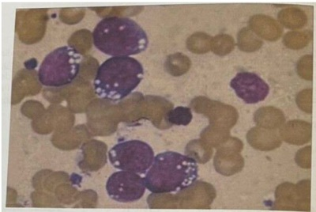
A Hiponatremia.
B Hiperfosfatemia.
C Hipercalcemia.
D Hipocalemia.
Questão 31 · Of talmologia · 4000182162Homem, 74 anos, relata que há dois anos vem notando faixa esbranquiçada no olho. Ao exame: presença de arco opaco esbranquiçado na junção esclerocorneal, na periferia da íris bilateral (Figura). Qual a conduta mais adequada em relação à alteração ocular mostrada?
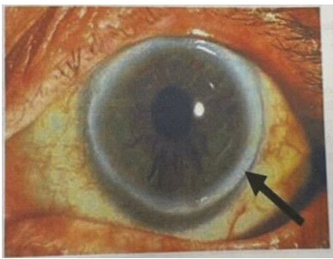
A Não prosseguir com investigação.
B Avaliação com lâmpada de fenda.
C Realização de topografia corneana.
D Prescrição de lágrima artificial.
Questão 32 · Mecanismo Fisiopatológico · 4000182161Homem, 66 anos, com diarreia há 5 dias. Relata 10 a 12 evacuações ao dia, com fezes líquidas, em pequeno volume, que após dois dias passaram a ser mucossanguinolentas, e acompanhadas de tenesmo. Ademais, refere dor abdominal difusa, em cólica, de intensidade. moderada e sem alivio com a evacuação, febre não aferida e náuseas. Exame : abdome com ruídos hidroaéreos hiperativos, doloroso à palpação difusamente, sem descompressão brusca. Qual mecanismo mais provável associado à diarreia?
A Inflamatório
B Cismótico.
C Motor.
D Secretor
Questão 33 · Marcadores sorológicos · Hepatologia · 4000182160Mulher, 28 anos, procura atendimento médico após seu irmão receber o diagnóstico de hepatite B. Assintomática. Exames laboratoriais: HBsAg negativo; anti HBc IgG positivo HBeAg negativo; anti-HBs positivo; anti HBe positivo. Como devemos interpretar estes resultados?
A Cura funcional da hepatite B.
B Infecção crônica pelo vírus B.
C Vacinação prévia para hepatite B.
D Imunotolerância ao vírus B.
Questão 34 · Endocrinologia · 4000182159Mulher, 56 anos, diabética há 8 anos e em tratamento com insulina, está internada para realização de colecistectomia. Você é chamado para avaliar a paciente por ela apresentar sudorese e tremores em mãos e estar agitada. Exame físico: bom estado geral, consciente, orientada, com palidez cutâneo mucosa. FC: 112 bpm. PA: 140 x 80 mmHg. Glicosimetria capilar: 46mg/dL. Qual é a conduta preconizada?
A Oferecer sanduíche.
B Glicose 5% endovenosa.
C Glicose 50% endovenosa.
D 300 mL de suco de laranja.
Questão 35 · Diagnóstico etiológico da hipernatremia · Manif estações clínicas · Nef rologia · 4000182158Homem, 19 anos, iniciou quadro de poliúria e polidipsia após bater a cabeça durante uma partida de futebol. Exame físico: bom estado geral, mucosas hidratadas, eupneico, estável hemodinamicamente. Diurese das 8h às 20h: 3000 mL; das 20h às 8h: 2600 mL. Exames laboratoriais: glicemia: 80 mg/dL (VR: 70 a ); Na: 146 mEq/L (VR: 136 a 145); osmolalidade urinária: 75 mOsm/kg (VR: 300 a 900); osmolalidade plasmática: 304 mOsm/kg (VR: 280 a 295); TSH: 5,6 mUI/L (VR: 0,5 a 5), T4 livre: 1.1 ng/dL (VR: 0,8 a 1,8); creatinina e cortisol normais. Considerando a doença mais provável, qual tratamento é indicado?
A Desmopressina.
B Restrição hidrica.
C Diurético.
D Levotiroxina.
Questão 36 · Tratamento da cirrose · Nef rologia · Diuréticos poupadores de potássio · 4000182157Homem, 60 anos, portador do hepatite C diagnosticada há 20 anos, sem tratamento. Refere aumento progressivo do volume abdominal, edema nos membros inferiores e alteração do ciclo sono vigília. Exame físico: REG, descorado +/4+, hidratado. Abdome globoso, presença de macicez móvel e do sinal do piparote. Exames laboratoriais: Cr: 1,0 mg/dl. Na: 121 mEq/ L, K: 3,8 mEq/L. Qual é o local de ação do diurético mais indicado?

A D
B C
C A
D B
Questão 37 · Alcalose respiratória · Nef rologia · 4000182156Mulher, 60 anos, tabagista (40 anos-maço), queixa-se de dispneia aos mínimos esforços. Nega tosse, febre ou outros sintomas gripais. Exame físico: REG, corada, hidratada, sonolenta; Peso = 150 kg e altura = 1,60 m; Ap. resp.: murmúrio vesicular presente, diminuído globalmente, sem RA, SatO₂: 97% com cateter de O₂ a 4L/min. Foi coletada uma gasometria arterial para avaliação. Qual é o resultado de gasometria arterial esperado?
A pCO₂ = 20 mmHg
B HCO₃ = 42 mEq/L
C pO₂ = 50 mmHg
D pH = 7,5
Questão 38 · Reação do tipo 1 · Dermatologia · 4000182155Homem, 40 anos, em tratamento de hanseníase dimorfa com poliquimioterapia multibacilar (PQT MB) há 2 meses, apresenta edema e aumento das lesões de pele, além de aparecimento de lesões ao redor das lesões prévias há 15 dias. Em associação, relata dor intensa na região de fossa cubital direita e piora do formigamento na mão ipsilateral. Não apresenta outras patologias ou alterações ao exame físico. Qual a conduta mais adequada?
A Ultrassonografia de nervos e substituição para PQT alternativa.
B Eletroneuromiografia e suspensão da PQT MB.
C Talidomida e substituição para PQT alternativa.
D Corticoterapia e manutenção da PQT MB.
Questão 39 · Clínica e tipos histológicos · Dermatologia · 4000182154Mulher, 62 anos, parda, diabética e hipertensa controlada, portadora de lúpus sistêmico em uso de cloroquina e azatioprina há 8 anos. Refere trauma na unha do 1º quirodáctilo da mão esquerda há 1 ano. Desde então notou escurecimento da unha (Figura). Qual diagnóstico mais provável?

A Melanoníquia traumática.
B Melanoma ungueal.
C Nevo melanocítico.
D Melanoníquia medicamentosa.
Questão 40 · Estratif icação de risco · Eletrocardiograma · Cardiologia · 4000182153Homem, 45 anos, dislipidêmico, refere dor precordial há 2 horas com irradiação para ombro direito, associada a diaforese e náuseas. Exame físico: estertores pulmonares basais, sem outras alterações; FC = 70 bpm, PA = 100 x 60 mmHg. Eletrocardiograma (ECG) abaixo. Qual a conduta?
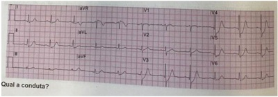
A Seriar ECG e observação clínica.
B Seriar troponina e eletrocardiograma.
C Intervenção coronariana percutânea.
D Tomografia computadorizada de tórax.
Questão 41 · Inf ectologia · Larva migrans · 4000182152Paciente chega à Unidade de Saúde da Família queixando se de lesão no braço há 5 dias. Passou pelo acolhimento e como havia vaga para consulta eventual, o paciente foi orientado a aguardar. Na consulta, o paciente referiu ao médico de família aparecimento de lesão em região posterior do braço D que vem aumentando progressivamente e o prurido se intensi cando, atrapalhando o sono e suas atividades no trabalho. Diante do apresentado, qual a melhor conduta para o quadro do paciente?
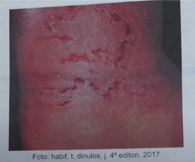
A Prescrever albendazol oral.
B Prescrever corticosteroide tópico.
C Solicitar exame parasitológico de fezes.
D Solicitar raios x de tórax PA e perfil.
Questão 42 · Avaliação do Crescimento · Pediatria · 4000182151Os pais de um garoto de 13 anos e 7 meses trazem no em uma consulta de rotina em uma unidade de saúde da família. Os pais demonstraram grande preocupação com a altura do lho, já que ele sempre foi o mais baixo da sala de aula da escola. A mãe conta que a gestação do menino ocorreu muito bem, sem intercorrências. O parto foi normal, a termo, sem intercorrências, peso ao nascimento 3180 gramas, comprimento 49 cm, PC 33 cm, Apgar 9/10. A criança apresentou o desenvolvimento neuropsicomotor adequado. Fica resfriado com uma frequência alta segundo a opinião dos pais. Sem outras doenças prévias, uso de medicamentos ou cirurgias. História familiar sem informações relevantes. EF: sem alterações dignas de nota, genitália masculina típica, estadiamento de Tanner G2P2, exame de idade óssea 11 anos, Calculada a altura alvo do garoto através das alturas dos pais. Avaliado o gráfico de crescimento do paciente desenhado acima, qual o diagnóstico provável do paciente?
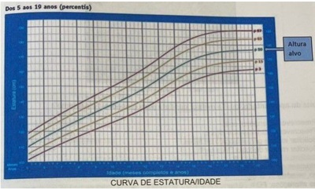
A Deficiência do hormônio do crescimento.
B Estatura normal.
C Baixa estatura constitucional.
D Baixa estatura familiar.
Questão 43 · Dermatologia · Dermatite de contato alérgica · 4000182150Uma paciente, do sexo feminino, chega à USF solicitando consulta porque há vários dias vem apresentando lesões eritematosas, descamativas e muito pruriginosas localizadas em regiões laterais De E do tórax, dirigindo se para região posterior, contornando o tronco de forma simétrica. Refere também lesões semelhantes em antebraço esquerdo, próximo ao punho que surgiram da mesma forma que as lesões em tronco inicialmente formavam pápulas eritematosas, evoluindo para vesículas de conteúdo seroso e depois descamação, sempre acompanhadas de muito prurido. Informa praticar atividade física regularmente e nos últimos tempos tem se dedicado à natação e corrida, mas no momento não está conseguindo porque sente piora após a realização dos exercícios. Fotos abaixo. Diante da história clínica e imagens das lesões, qual, na sua opinião, o diagnóstico mais provável desta paciente?

A Dermatite herpetiforme.
B Dermatite de contato.
C Dermatite psoriasiforme.
D Dermatite atópica.
Questão 44 · Medicina Preventiva · 4000182149Os gestores da Região de Saúde (RS) X se reuniram para discutir a operacionalização da rede de atenção à saúde (RAS) regional, considerando as orientações de Ministério da Saúde sobre este assunto. Durante a discussão houve um impasse, pois alguns gestores defendiam a construção de mais dois hospitais na RS, enquanto outros argumentavam que era preciso construir mais unidades de atenção primária à saúde (APS). Os gestores que defendiam o maior investimento na APS, se apoiavam no conceito de que uma RAS os serviços de saúde devem ser organizados de forma que o que é frequentemente necessário esteja disseminado e o que é raramente necessário esteja concentrado. Esse conceito empregado pelos gestores se refere a que princípio do Sistema Único de Saúde?
A Universalização
B Hierarquização.
C Descentralização.
D Integralidade.
Questão 45 · Medicina Preventiva · 4000182148Os cinco gestores da Região de Saúde (RS) X solicitaram uma reunião extraordinária da Comissão Intergestores Regional (CIR) da Região de Saúde Y para discutir especi camente duas questões: a falta de agentes comunitários que estava prejudicando o cadastramento da população nas unidades de atenção primária e a la de espera de 8 meses para a realização de colonoscopia, disponibilizada apenas no município sede da RS. Para enfrentar estes problemas os gestores zeram a pactuação de tentar organizar colaborativamente o sistema de saúde regional no formato de rede de atenção à saúde (RAS), pois eles acreditavam ser esse o caminho mais acertado para se melhorar o atendimento de saúde à população. Quais elementos constitutivos da RAS estavam prejudicados na RS do caso descrito?
A Estrutura operacional e modelo de atenção.
B Modelo de atenção e sistemas logísticos.
C Sistemas logísticos e governança.
D Gestão de base populacional e sistemas de apoio.
Questão 46 · Inf ectologia · Vacinas · Inf ecção latente pelo Mycobacterium tuberculosis ILTB · 4000182147Você atua como Médico de Família e Comunidade em uma Unidade Básica de Saúde e faz seguimento de uma paciente do sexo feminino de 75 anos, que trata hipertensão arterial com enalapril há aproximadamente 10 anos e está com a carteira de vacinação em dia. Ela comparece para consulta de rotina, assintomática, quando você detecta a presença de esplenomegalia no exame abdominal e a encaminha a um hematologista para investigação diagnóstica. Um mês depois, a hematologista lhe devolve a paciente com o diagnóstico de linfoma de células B (zona marginal) esplênico. Ela propõe como tratamento esplenectomia + 4 sessões de rituximabe, um anticorpo monoclonal anti células B, e lhe pergunta quais os cuidados necessários para a prevenção de complicações infecciosas potencialmente associadas ao mesmo. Diante dessa situação, assinale dentre as alternativas abaixo aquela que contém a conduta apropriada para essa paciente.
A Realização de teste tuberculínico e indicação de rifapentina + Isoniazida se resultado do teste maior ou igual a 5mm.
B Vacinação contra pneumococo e meningococo e Haemophilus influenzae tipo B, no mínimo 4 semanas após a cirurgia.
C Realização de teste tuberculínico e indicação de rifapentina + Isoniazida se resultado do teste maior ou igual a 10mm.
D Vacinação contra pneumococo, meningococo e Haemophilus influenzae tipo B, no mínimo 2 semanas antes da cirurgia.
Questão 47 · Sarampo · 4000182146O conhecimento dos períodos de incubação e de transmissibilidade de uma doença infecciosa é essencial para o médico orientar adequadamente a conduta frente às situações em que ocorre contato entre um indivíduo infectado e outras pessoas da população. Para o sarampo, os períodos de incubação e de transmissibilidade são, respectivamente, de 7 a 18 dias até o aparecimento da febre, e de quatro dias antes a quatro dias após o surgimento do exantema. Suponha que a criança A tenha regressado recentemente de um país europeu e que no dia 1⁰/10/2022 apresentou sinais e sintomas de sarampo com surgimento de exantema. No dia 30/9/2022, havia tido contato com a criança B, nunca vacinada contra sarampo. Frente a essa situação, você indicaria:
A Quarentena até 7/10 para A e isolamento até 6/10 para B.
B Quarentena até 6/10 para A e isolamento até 15/10 para B.
C Isolamento até 5/10 para A e quarentena até 18/10 para B.
D Isolamento até 9/10 para A e quarentena até 14/10 para B.
Questão 48 · Medicina Preventiva · 4000182145Com base nos valores de sensibilidade e especi cidade de um teste diagnóstico, a chamada Curva ROC (Receiver Operation Characteristic) é uma representação grá ca que busca facilitar a identi cação do melhor ponto de corte desse teste quando aplicado a uma doença. Na Curva ROC aqui representada, o ponto de corte mais adequado para o diagnóstico da doença seria:
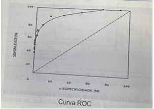
A O que mais se aproxima do quadrante superior direito.
B O que se situa no ponto médio da linha diagonal tracejada.
C O que mais se aproxima do quadrante inferior direito.
D O que mais se aproxima do quadrante superior esquerdo.
Revisar: possível letra faltando em enunciado
Questão 49 · Medicina Preventiva · 4000182144Um recurso utilizado para estimar o potencial epidêmico de uma doença transmissível é o chamado número básico de reprodução (RO), que representa o número médio de indivíduos que poderão ser infectados a partir de um caso, desde que nenhuma medida preventiva seja estabelecida e que haja 100% de susceptibilidade populacional. A partir de uma pessoa infectante e após cinco gerações de transmissão, uma doença com R0 = 2 atingirá um número médio de casos equivalente a:
A 48
B 18
C 32
D 12
Questão 50 · Medicina Preventiva · 4000182143Na reunião da Comissão Intergestores Regional (CIR) durante a discussão sobre o Programa Previne Brasil, os Secretários da Saúde foram estimulados a implantar em seus municípios Programas de Residência Médica em Medicina de Família e Comunidade e de Residência Multipro ssional em Saúde, na Atenção Primária à Saúde (APS) confirmando o compromisso da gestão pública com a formação de pro ssionais para atuação no Sistema Único de Saúde (SUS). Os gestores foram informados que aqueles que implantassem os programas de residência receberiam nanciamento federal para o custeio desta atividade. A implantação de Programas de Residência, de acordo o Programa Previne Brasil, refere-se a que componente do financiamento da APS?
A Capitação ponderada.
B Incentivo para ação estratégica.
C Pagamento por desempenho.
D Pagamento por produtividade.
Questão 51 · Medicina Preventiva · 4000182142O gráfico abaixo foi extraído de um estudo de coorte em que os autores avaliaram o meio principal de transporte utilizado por quase 400.0000 pessoas no Reino Unido e sua associação com a incidência de algumas doenças e também sobre a mortalidade ao longo de 25 anos de seguimento. Considerando as taxas ajustadas de risco relativo e respectivos intervalos de confiança, assinale a alternativa que interpreta corretamente achados do estudo.
A Comparativamente àqueles que dirigiam carro, os que usavam a bicicleta tiveram menor mortalidade por câncer e doenças cardiovasculares.
B Comparativamente àqueles que dirigiam carro, os que usavam transporte público tiveram menor mortalidade por doenças cardiovasculares.
C Comparativamente àqueles que dirigiam carro, os que usavam caminhavam tiveram menor mortalidade por doenças cardiovasculares.
D Comparativamente àqueles que dirigiam carro, os que caminhavam tiveram menor incidência de câncer e mortalidade por câncer.
Questão 52 · Lombalgia · 4000182141Paciente de 34 anos de idade, sexo masculino, trabalha como pedreiro, sem doenças prévias, não faz uso de medicamentos de rotina. Chega à unidade de saúde da família com queixa de dor lombar de forte intensidade há 21 dias. A dor surgiu após esforço físico intenso em seu serviço. A dor está incomodando-o muito, impedindo de trabalhar normalmente nos últimos dias. Está fazendo uso de analgésicos comuns e anti-inflamatórios orais diariamente desde o início do quadro, com pouca melhora. A dor piora aos esforços e melhora com o repouso. A dor não irradia para os membros inferiores, nega perda de força ou formigamentos nos MMII, nega febre, dores noturnas. Sem queixas urinárias, gastrintestinais. EF: realizado exame físico completo, tendo como alteração apenas a dor lombar à mobilidade da coluna, dores à palpação da musculatura paravertebral lombar, sem dé cit neurológico nos membros, sem outras alterações dignas de nota. Qual a abordagem mais adequada para diagnóstico do paciente neste momento?
A Não há indicação de exames de imagem neste momento.
B Solicitar radiografia simples da coluna lombar.
C Solicitar tomografia computadorizada coluna lombar.
D Solicitar ressonância nuclear magnética da coluna lombar.
Questão 53 · Inf ectologia · Inf ecção latente pelo Mycobacterium tuberculosis ILTB · 4000182140Você é o médico de uma unidade de saúde da família em uma cidade de pequeno porte que faz seguimento dos pacientes portadores do HIV. Você atende um paciente recém diagnosticado com HIV, totalmente assintomático, sem comorbidades. Faz os exames iniciais para investigação e início do tratamento para HIV. Nos exames tem resultado do teste tuberculínico de 15 mm. Sem história de tuberculose no passado. Exames bioquímicos e hemograma normais. Contagem de CD4 370 cel/mm³, carga viral 10000 cópias/ml. Paciente não apresenta queixas respiratórias, exame físico do aparelho respiratório normal e radiogra a do tórax normal. Além de iniciar tratamento para HIV, qual a conduta mais adequada?
A Iniciar isoniazida, pirazinamida, rifampicina e etambutol.
B Iniciar tratamento com isoniazida.
C Manter observação clínica.
D Repetir o teste tuberculínico após 30 dias.
Questão 54 · Disf unção sexual masculina · Urologia · Cirurgia · 4000182139Numa consulta de paciente na unidade de atenção primária do sexo masculino, 47 anos, casado, heteroafetivo, parceira única. O paciente questiona sobre o seu desempenho nas relações sexuais. O mesmo refere que sua ereção não é a mesma de antes e que isso tem ocorrido com mais frequência nesse ano. Paciente nega queixas urinárias como dor, incontinência, jato fraco, hesitação ou sensação de esvaziamento incompleto. Nega alterações ejaculatórias como ejaculação precoce ou diminuição do volume ejaculado. Refere que mantém desejo sexual e que relacionamento está bom, mas parceira tem notado a diferença na ereção. Refere que continua mantendo episódios de ereção reflexa. Nega sintomas de ansiedade ou de depressão, mas que está preocupado em relação a seu desempenho. Não faz uso de nenhuma medicação, não tem hábitos de tabagismo, etilismo ou de substâncias psicoativas. Refere sedentarismo. Ao Exame físico: IMC de 42 Kg/m². Ausculta cardíaca sem alterações. Pressão Arterial: 128 x 74 mmHg. Sem sinais clínicos de obstrução arterial periférica. Genitais sem lesões, deformidades, testículos normotró cos. Exames: Glicemia: 95 mg/dl Valor de referência 70-100 mg/dl Colesterol total: 270 mg/dl Valor de referência 140-200 mg/dl HDL Colesterol: 58 mg/dl Valor de referência > 45 mg/dl Triglicérides: 290 mg/dl Valor de referência < 150 mg/dl Testosterona total: 429 ng/dl Valor de referência 250-900 ng/dl Além de recomendar atividade física de maneira regular, orientação sobre resposta sexual e controle do peso, qual seria a melhor terapêutica medicamentosa para o paciente?
A Clomipramina.
B Finasterida.
C Alprostadil.
D Sildenafila.
Revisar: possível letra faltando em enunciado
Questão 55 · Tratamento da Hipertensão arterial · 4000182138Paciente com 44 anos do sexo feminino de raça negra vem em retorno para avaliação de exames e acompanhamento de pressão arterial alterada, não fuma, faz uso de álcool aos nais de semana. Na consulta verificado pressão arterial de 142 x 92 mmHg, além de IMC de 38, Resultados de exames: Glicemia de jejum: 109 mg/dl, colesterol total: 207 mg/dl, HDL colesterol: 58 mg/dl, triglicérides: 190 mg/dl, creatinina: 1,1 mg/dl, sódio: 142 mEq/l, potássio: 4,9 mEq/l, ácido úrico: 5,1 mg/dl, urina tipo 1: sem alterações. Valores de referência: Glicemia 70 - 100 mg/dl Colesterol total: < 200 mg/dl HDL Colesterol: 40-60 mg/ dl Triglicérides: < 150 mg/dl Creatinina: 1,3 mg/dl Sódio: 135 - 145 mEq/l Potássio: 3,5 - 5,5 mEq/l Ácido Úrico: 4,0 - 7,0 mg/dl Qual tratamento é o mais indicado?
A Beta bloqueador.
B Vasodilatador direto.
C Bloqueador de canal de cálcio.
D Antagonista alfa 1 adrenérgico.
Questão 56 · Inf ectologia · Diagnóstico · Quadro clínico · 4000182137Homem, 35 anos, trabalha como pedreiro e comparece à unidade de saúde para uma consulta, acompanhado de sua esposa, pois acha estranho o marido estar com tosse há 1 mês. Paciente relata que no início a tosse era seca e que atualmente está com catarro. Acha que perdeu peso porque suas roupas estão mais largas e que, frequentemente, tem tido febre quando chega do trabalho à tarde. A esposa declara que o marido geralmente apresenta febre de 38.5°C e que durante à noite transpira bastante. Não é hipertenso e nem diabético. Nega problemas pulmonares na infância. É tabagista de paieiro há 15 anos. À ausculta pulmonar observa-se murmurio vesicular reduzido. Qual seria o melhor exame para confirmar o diagnóstico?
A Hemograma completo.
B Hemocultura.
C Baciloscopia de escarro.
D Espirometria.
Questão 57 · Diagnóstico da Depressão · Depressão · 4000182136Mulher de 75 anos vem à consulta de saúde acompanhada da lha que refere que sua mãe está apresentando muitos esquecimentos, há aproximadamente 6 meses. Paciente é hipertensa, diabética e faz uso de losartana 50 mg 1 comprimido ao dia e glifage XR 500 mg 2 comprimidos ao dia. Paciente estudou até a 8° série do ensino médio. Ao exame clínico: PA: 120 x 80 mmHg, FC: 71 bpm, FR:16 ipm Peso: 60 Kg, Alt: 1.65 m, IMC: 22, saturação de O₂: 98% dextro: 110 mg/dl. Exames laboratoriais: vitamina B12: 400 (VR: 210-980 pg/ml), TSH: 2.80 (VR: 0.3-4.8), MEEM: 28 pontos. GDS (Escala de Depressão Geriátrica) 8. De acordo com o quadro descrito acima, qual o diagnóstico mais provável?
A Hipotireoidismo.
B Síndrome demencial.
C Transtorno depressivo.
D Hipovitaminose de B12.
Questão 58 · Calendário inf antil · 4000182135Criança de 5 meses e 17 dias vem para consulta de puericultura com seu médico de família e mãe apresenta o cartão vacinal abaixo. Segundo o Calendário Nacional de vacinação apresentado, qual vacina está em atraso?
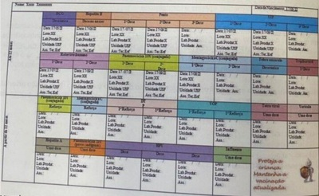
A Febre Amarela.
B Pentavalente.
C VIP.
D Meningocóccica C.
Questão 59 · Exame dermatoneurológico · Diagnóstico · Dermatologia · 4000182134J.E.C. 50 anos, sexo masculino, refere que há 2 anos apresenta câimbras e dormência em perna esquerda. Nega história de traumatismo, cirurgias ou lesões na pele. Nega lombalgia. Nega doenças crônicas e uso de medicamentos. Ao exame: IMC 28 Kg/m2, PA 134 x 78 mmHg. FC 68 bpm. Pele sem lesões visíveis. AR: MV + sem RA. ACV: RCR 2BNF, sem sopros. Abdome indolor, sem massas ou VMG. MMII: sem edema, com nervo bular comum à esquerda palpável e o seguinte exame de sensibilidade com estesiômetro. Qual a suspeita diagnóstica mais provável?
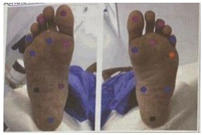
A Hanseníase com comprometimento neural.
B Diabetes com neuropatia diabética.
C Hérnia de disco com compressão de raiz nervosa.
D Distúrbio hidroeletrolítico.
Questão 60 · Clínica Médica · 4000182133L.C.P. 39 anos, vendedora, sexualmente ativa, procura seu Médico de Família e Comunidade sem queixas, desejando realizar exames, pois "faz tempo que não realiza”. Como antecedente pessoal, informa ser G1P1A0C0 com parto há 5 anos. Refere cirurgia para implante de prótese mamária por motivo estético há 15 anos. Nega doenças. Refere uso de DIU de cobre há 5 anos. Nega história familiar de doenças. Ao exame físico apresenta IMC 24 kg/m², pele sem lesões, mucosas normocoradas. Além da realização de exame citopatológico do colo do útero e aferição de pressão arterial, qual a ação também está indicada para rastreamento assintomático com evidência científica grau de recomendação A?
A Lipidograma
B Glicemia de jejum
C Mamografia
D Rastreamento de tabagismo.
Questão 61 · Anticoncepção em condições especiais · 4000182132Homem trans, 32 anos, hipertenso, comparece para consulta de rotina em UBS. Refere-se relacionar sexualmente com homem cisgênero, e atualmente está em uso regular de contraceptivo oral combinado (COC) contendo levonorgestrel (0,15 mg) + etinilestradiol (0,03 mg) para controle de sangramento vaginal volumoso. Refere ter iniciado o uso de testosterona em outro serviço há 2 meses. Exame físico: sem lesões ou achados anormais ao exame da genitália. Qual a melhor conduta clínica neste momento?
A Trocar para anel ou adesivo contraceptivo e suspender a testosterona.
B Prescrever análogo de GnRH e suspender temporariamente a testosterona.
C Substituir o COC por progestágeno isolado e manter a testosterona.
D Suspender o COC e manter apenas a testosterona.
Questão 62 · Interpretação e conduta f rente as atipias citológicas · 4000182131Mulher, 33 anos, G2PC2, último parto há 3 anos, realizou última coleta de colpocitologia durante o último pré-natal, sem anormalidades citológicas de acordo com a informação da paciente. Refere ciclos menstruais regulares em uso de contraceptivo hormonal injetável mensal. Comparece para checar o resultado da colócitologia que evidencia amostra satisfatória com epitélio metaplásico e cilíndrico e anormalidades em células glandulares sem outras especi cações. Qual a conduta mais adequada para esta paciente?
A Realizar cosposcopia.
B Realizar ultrassom transvaginal.
C Solicitar biologia molecular.
D Repetir colpocitologia
Questão 63 · Tratamento · Ginecologia · 4000182130Nuligesta, 24 anos, há um ano tenta engravidar sem sucesso. Apresenta ciclos menstruais de 27 a 29 dias, com uxo normal. Tem atividade sexual regular, com relação pênisvagina quatro vezes na semana. Marido, 28 anos, tem três lhos de outro relacionamento e nega comorbidades. Exames complementares: FSH 5,4 mUl/mL (2,8 a 14,4 mUl/mL), TSH 4,0 μ imagem hipoecogênica alongada em topogra a de anexo esquerdo. Histerossalpingogra a com cavidade uterina normal, trompa direita liforme e trompa esquerda dilatada, sem passagem de contraste bilateralmente. Espermograma com volume de 2mL, 16 milhões de espermatozoides/mL, 50% vivos, 30% de motilidade progressiva e 5% normais (critério de Kruger). Qual é o melhor tratamento para esse casal?
A Ciclo de fertilização
B Coito programado após indução da ovulação.
C Ciclo de fertilização
D Inseminação intrauterina após indução da ovulação.
Questão 64 · Ginecologia · Diagnóstico · Classif icação · 4000182129Mulher, 53 anos, com antecedente de 5 partos vaginais prévios e menopausa há 2 anos. Procura o serviço médico com sensação de peso no períneo e de uma bola que sai pela vagina. O exame ginecológico identi cou um prolapso descrito segundo o instrumento POPQ (Pelvic Orgean Prolapse Quanti cation) conforme mostrado na figura a seguir. Quais os diagnósticos podem ser feitos de acordo com as anotações presentes no POP-Q?
A Prolapso de parede posterior, rotura perineal, histerectomia prévia.
B Prolapso de parede anterior, prolapso de cúpula vaginal, histerectomia prévia.
C Prolapso de parede posterior, prolapso uterino grau III, rotura perineal.
D Prolapso de parede anterior, prolapso uterino grau II, prolapso de parede posterior.
Questão 65 · Obstetrícia · Gestação ectópica · 4000182128Mulher, 28 anos, procura atendimento ginecológico com queixa de dor pélvica à direita há 2 dias de fraca intensidade, mas que impede de desenvolver suas atividades laborais. Ao exame físico: PA: 120 x 70 mmHg, FC:84 bpm, abdome plano, normotenso com discreta dor em fossa ilíaca direita à palpação profunda, descompressão brusca negativa. Exames complementares solicitados: Hb: 12,3 g/dl; Ht:33%, B HCG: 1720,0 mUl/ml, progesterona: 5,2 ng/ml (VR: 11 a 90 ng/ml). Ultrassonogra a pélvica: útero AVF, centrado, vol: 110 cm³, ovário esquerdo: 5 cm³, ovário direito: 6,5 cm³, em região anexial direita presença de lesão ovalada, amorga com 2,2 x 1,9 x 1,7 cm com vascularização aumentada ao redor da lesão, sem líquido livre na cavidade abdominal. Considerando se a possibilidade diagnóstica mais provável, qual a conduta mais apropriada neste momento após internação da paciente?
A Laparotomia exploradora.
B Cetoprofeno 100 mg EV.
C Observação clínica.
D Metotrexate IM 50 mg/m²
Questão 66 · Endocrinologia · 4000182127Nuligesta, 21 anos, procura atendimento ginecológico referindo que não menstrua há seis meses. Histórico de ciclos menstruais regulares com intervalos de 28 a 30 dias. Refere cefaleia frequente, que melhora com analgésicos. Em uso de amitriptilina há um ano para tratamento de depressão. Nega alterações ponderais. Faz atividade física regularmente. Sem atividade sexual há dois anos. Exame físico: PA = 90X60 mmHg; IMC = 17 Kg/m². Mamas M5, sem nódulos e expressão negativa. Exame ginecológico: sem alterações. Exames complementares: prolactina = 112 ng/ml (VN < 25 ng/ml); FSH = 4,0 mlU/ml (VN - 2,5 a 10,2 mlU/ml); TSH = 2,1 mlU/ml (VN = 0,4 a 4,0 mlU/ml). Qual a conduta mais adequada para o caso neste momento
A Solicitar ressonância magnífica de crânio e sela túrcica.
B Dosagem de prolactina 1 semana após troca do antidepressivo.
C Iniciar cabergolina 0,5 mg 2 vezes por semana.
D Iniciar terapia hormonal com estrogênio e progesterona.
Questão 67 · Tratamento · 4000182126Mulher, 62 anos tratada de câncer de mama há 4 anos, em uso de tamoxifeno 20 mg via oral ao dia. Apresenta sangramento vaginal de pequeno volume há 2 meses. A ultrassonogra a transvaginal identi cou eco endometrial irregular com 9 mm de espessura, sem outras alterações. A histeroscopia diagnóstica e a biópsia dirigida foram compatíveis com hiperplasia endometrial atípica. Qual a melhor conduta?
A Repetir a ultrassonografia em 3 meses.
B Suspender o tamoxifeno e introduzir inibidor da aromatas
C Histerectomia e salpingooforectomia bilateral.
D Progesterona via oral por 6 meses.
Questão 68 · Dor mamária mastalgia · 4000182125Mulher, 27 anos, G1P1, usuária de DIU de cobre, menstruando regularmente. Queixa-se de dor intensa em quadrante supero lateral da mama direita, há 3 meses, com piora importante pré-menstrual e melhora parcial após. Está preocupada com histórico de câncer na família, pois tia avó materna teve câncer de mama aos 68 anos. Exame físico: mamas sem nódulos ou lesões. Cadeias linfonodais sem alterações. Dor à Ultrassonogra a de mamas realizadas há 10 dias: cistos mamários bilaterais, maior diâmetro 0,5 cm, BI RADS:2. Qual a melhor conduta?
A Retorno com ultrassonografia de mamas em 6 meses.
B Solicitar ressonância magnética das mamas.
C Tranquilizar e prescrever anti-inflamatório tópico.
D Teste terapêutico com tamoxifeno 20 mg/dia.
Questão 69 · Câncer de vulva · 4000182124Mulher de 68 anos, queixa-se de prurido vulvar há cerca de 8 meses. A inspeção genital está representada na imagem. Diante do quadro clínico e do exame físico, qual a melhor conduta?
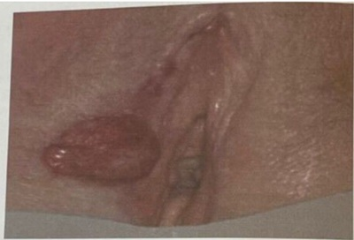
A Exérese completa com margem de 3 mm.
B Biópsia incisional da borda da lesão.
C Corticosteroide de alta potência.
D Antibioticoterapia com penicilina benzatina.
Questão 70 · Sangramento uterino anormal · 4000182123Mulher, 30 anos, G2P2, com queixa de sangramento uterino anormal há 5 anos. Não apresenta comorbidades e nem faz uso de medicações. Marido fez vasectomia. No prontuário está descrito como sangramento de causa endometrial. Qual alternativa contém a descrição do ciclo e do achado da ultrassonogra a transvaginal (USTV) mais prováveis para este caso?
A Ciclo irregular com aumento de volume e USTV com espessamento endometrial difuso.
B Ciclo regular com sangramento prolongado e USTV com perda junção miométrio endométrio.
C Ciclo regular com aumento de volume e USTV sem alterações.
D Ciclo irregular com sangramento prolongado e USTV sem alterações.
Questão 71 · Diabetes na gestação DMG · Obstetrícia · 4000182122Primigesta, 24 anos, com 29 semanas de idade gestacional, sem comorbidades prévias à gestação. Retorna à consulta de pré-natal sem queixas. Recebeu diagnóstico de Diabetes Mellitus gestacional há 10 dias, com adequada adesão ao plano nutricional, programa de atividade física e automonitorização glicêmica, porém mantendo se acima das metas glicêmicas em aproximadamente 50% dos valores aferidos. Exame físico geral e obstétrico dentro dos padrões de normalidade. Ganho de peso de 300 gramas em uma semana. Foi indicada insulinoterapia, porém paciente é moradora de área rural di culdade de acesso, transporte e armazenamento adequados da insulina. Considerando as recomendações brasileiras de 2019 (Organização Pan Americana da Saúde. Ministério da Saúde. Federação Brasileira das Associações de Ginecologia e Obstetrícia. Sociedade Brasileira de Diabetes), qual a alternativa terapêutica farmacológica mais adequada para essa paciente?
A Gilbenclamida.
B Acarbose.
C Liraglutida.
D Metformina.
Questão 72 · HIV na gestação · Inf ectologia · 4000182121Gestação, 25 anos, G2P1, idade gestacional de 39 semanas + dias, portadora do vírus da imunode ciência humana e uso regular de tenofovir+lamivudina+dolutegravir. A carga viral com 35 semanas e 3 dias era: 165 cópias/mL e T CD4: 648 cél/mL. Demais exames sem alterações. Feto cefálico com vitalidade preservada. Qual alternativa contempla a condução mais adequada este caso, de acordo com o Ministério da Saúde do Brasil?
A Cesárea sem zidovudina endovenosa.
B Parto vaginal e zidovudina endovenosa.
C Parto vaginal sem zidovudina endovenosa.
D Cesárea e zidovudina endovenosa.
Questão 73 · Corioamnionite · Rotura prematura de membranas ovulares RPM · Obstetrícia · 4000182120Secundisgesta (G2P1N), 33 semanas de gestação, está internada com diagnóstico de corioamniorrexe prematura em conduta expectante há uma semana. Na ocasião do diagnóstico recebeu betametasona e 48 horas de penicilina cristalina. Na avaliação realizada hoje, se queixou de dor abdominal. Exame físico: BEG, temperatura de 38,0°C, demais sinais vitais e exame físico geral normais. Atividade uterina ausente, feto apresentação cefálica. Vitalidade geral preservada. Toque: colo posterior, médio, 1 polpa, feto cefálico. Exames laboratoriais: Hemograma: glóbulos brancos = 13.500/mm³, 17% de bastões, plaquetas 180.000/mm³. Swab vaginal/endoanal para Estreptococo do grupo B positivo. Quais as melhores condutas nesse momento?
A Clindamicina, betametasona por 24 horas e resolução da gestação por cesárea
B Clindamicina, penicilina cristalina e indução do trabalho de parto.
C Amoxicilina, azitromicina, penicilina cristalina e indução do trabalho de parto na 34ª semana.
D Clindamicina, gentamicina e resolução da gestação por cesárea.
Questão 74 · Obstetrícia · Partograma · 4000182119Primigesta, 32 anis, 41 semanas de gestação de risco habitual. Interna na fase ativa da dilatação para assistência ao parto. Na admissão apresentava sinais vitais e exame físico geral normal, altura uterina=38 cm, vitalidade fetal normal. A evolução gráfica de seu trabalho de parto está representada abaixo (Figura). Qual é a conduta para após a avaliação das 20h?
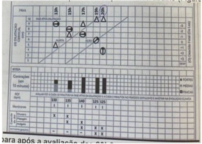
A Aguardar mais uma hora de período expulsivo.
B Realizar parto instrumentalizado.
C Realizar amniotomia artificial.
D Estimular a paciente a realizar puxos dirigidos.
Questão 75 · Avaliação da vitalidade f etal · Obstetrícia · 4000182118Secundisgesta, 29 anos, com 40 semanas de gestão, comparece a maternidade devido a redução da movimentação fetal nas últimas horas. Sem outras queixas. Nega doenças e não houve intercorrências em seu pré-natal. Exame físico geral normal. Ausência de atividade uterina, altura uterina=35 cm e frequência cardíaca feral normal, com percepção de movimento fetal ao exame. Uma cardiotogra a foi realizada ( figura). Qual alternativa apresenta a melhor conduta? Figura: Cardiotocografia realizada devido idade gestacional e queixa materna (mf=movimentos fetais)
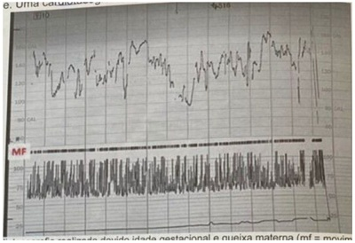
A Realizar parto cesárea imediatamente.
B Conduta expectante com alta hospitalar.
C Internar para indução do trabalho de parto.
D Realizar perfil biofísico fetal.
Questão 76 · Obstetrícia · Assistência ao parto normal · 4000182117Primigesta, 20 anos, durante o acompanhamento de pré-natal de risco habitual, elabora e registra institucionalmente o seu plano de parto, pelo qual manigesta expressa vontade, dentre outros aspectos, de ser acompanhada durante seu trabalho de parto e parto tanto por sua esposa, como também por uma doula voluntária capacitada e certi cada de sua escolha. A equipe assistencial acolhe o plano de parto e promove esclarecimentos e orientações sobre viabilidade de cada tópico abordado. Em relação ao caso, qual a orientação mais adequada?
A Permitir a permanência de uma acompanhante com preferência para esposa.
B Permitir a permanência simultânea da esposa e da doula.
C Permitir a permanência de uma acompanhante com alternância entre a esposa e a doula.
D Permitir a permanência de uma acompanhante com preferência para a doula.
Questão 77 · Obstetrícia · 4000182116Secundisgesta com 1 parto normal anterior a termo, 26 anos, 15 semanas de gestação, com comorbidades prévias. Comparece à consulta para iniciar pré-natal, sem queixas clínicas ou obstétricas. Exame física: bom estado geral, PA: 105 x 72 mmHg Peso: 92 kg estatura: 160 cm. Altura uterina: 18 cm ausculta de batimentos cardíacos fetais 142 bpm. Além da suplementação de ferro, qual a conduta mais adequado para essa paciente?
A iniciar ácido acetilsalicílico e enoxaparina.
B Iniciar ácido acetilsalicílico e cálcio.
C Iniciar ácido acetilsalicílico.
D Não indicar profilaxia medicamentosa.
Questão 78 · Anticoagulantes antagonistas da vitamina K · Trombose na gestação · Heparinas · 4000182115Primigesta, 34 anos, com 16 semanas de gestação, comparece ao ambulatório de gestação de alto risco para iniciar seguimento de pré-natal. Sem queixas clínicas e obstétricas. Antecedentes pessoais: cardiopatia reumática com válvula metálica, classe funcional I, em uso de warfarin 5 mg uma vez ao dia. O resultado do RNI (Razão Normalizada Internacional) colhido há 1 semana apresenta valor de 1,8 vezes o controle. Qual é a melhor conduta com relação à anticoagulação dessa paciente?
A Aumentar a dose de warfarin para 7,5 mg uma vez ao dia.
B Suspender warfarin e iniciar dose terapêutica de enoxaparina.
C Manter a dose de warfarin 5 mg uma vez ao dia.
D Suspender warfarin e iniciar AAS 100 mg uma vez ao dia.
Questão 79 · Técnicas de Anestesia do Neuroeixo · Distúrbios hipertensivos na gestação DHEG · Cirurgia · 4000182114Secundisgesta com 1 parto cesárea anterior, 24 anos, 31 semanas de gestação, é trazida ao centro obstétrico pela família devido quadro de crise convulsiva há 30 minutos. Ao exame: regular estado geral, pressão arterial: 160 x 120 mmHg, frequência respiratória: 24 irpm. Abdome: altura uterina: 32 cm, atividade uterina ausente, ausculta fetal de 150 bpm, sem desacelerações. Toque vaginal: colo posterior, longo, amolecido, impérvio. Equipe inicia administração de sulfato de magnésio e decide pela interrupção da gestação por cesárea. Considerando a maior segurança materna, qual(is) exame(s) é(são) mandatório(s) para orientar o procedimento anestésico cirúrgico?
A Ureia e creatina.
B Fibrinogênio.
C Hemograma.
D TP e TTPA
Questão 80 · Ginecologia · Úlceras inf ecciosas de causa sexualmente transmissível · 4000182113Primigesta, 21 anos, 26 semanas de gestação, procura o pronto atendimento referindo lesões genitais muito dolorosas. Informa que as lesões apareceram há três dias, mas não observou vesículas previamente ao aparecimento de lesões. Nega episódios semelhantes no passado. Nega queixas em relação à gravidez. Ao exame, observa-se a imagem a seguir: Inspeção vulvar: lesões genitais Além do alívio da dor e orientações de higiene, que tratamento deve ser prescrito para essa gestante?
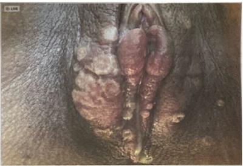
A Aciclovir 400 mg 8/8 horas via oral.
B Ceftriaxone 500 mg IM dose única.
C Azitromicina 1 grama via oral dose única.
D Penicilina benzatina 2400.000 UI por duas semanas.
Questão 81 · Síndrome Narcótica · Intoxicações Exógenas · 4000182112Um pré-escolar de 4 anos e 12 kg foi submetido a cirurgia abdominal de baixa complexidade com anestesia geral, sem intercorrências. Ao nal do procedimento, recebeu uma dose adicional endovenosa de fentanil e cetoprofeno para analgesia. Veio direto para enfermaria pediátrica, 1 hora após o nal da cirurgia. Após 30 minutos, você é chamado para avaliar a criança, pois a mãe diz que ela não acorda. Ao exame físico: corada, hidratada, acianótica, anictérica e afebril. Frequência cardíaca 110 bpm, frequência respiratória 10 irpm, pressão arterial 95 x 55 mmHg, saturação periférica de oxigênio 90% em ar ambiente. Ausculta respiratória mostra murmurio vesicular simétrico, sem ruídos adventícios. Ausculta cardíaca revela ritmo regular, duas bulhas normofonéticas, sem sopros, pulsos centrais e periféricos fortes, tempo de enchimento capilar 2 segundos. Abdome sem anormalidades. Pupilas mióticas e isocóricas. Com base no quadro clinico acima, qual o tratamento farmacológico imediato mais adequado para esta situação clínica?
A Haloperidol.
B Flumazenil.
C Glicose.
D Naloxona.
Questão 82 · Tratamento · 4000182111Recém-nascido de parto normal, a termo, após uma gestação sem intercorrências. Mãe de 25 anos, G2, saudável, com acompanhamento pré-natal adequado. As sorologias maternas foram negativas com 10 semanas de gestação e no momento do parto (HIV, VDRL, toxoplasmose IgG/IgM, hepatites B e C). Ao nascimento, foi observado que o recém- nascido apresentava peso no percentil 4 para a idade gestacional, petéquias em face e tronco, hepatoesplenomegalia e microcefalia. Exames realizados: Hemograma com Hb/Ht normais, série branca normal, plaquetas 87.000/µL; TGO 92 U/L (VR até 32 U/L); TGP normal; fundoscopia ocular: sem alterações; ultrassom transfontanelar: presença de calci cações periventriculares; triagem auditiva: ausência de respostas bilateralmente; análise de líquido cefalorraquidiano normal Qual é o tratamento indicado para a causa mais provável deste quadro?
A Aciclovir.
B Penicilina cristalina.
C Ganciclovir.
D Sulfadiazina e pirimentamina.
Questão 83 · Amamentação na primeira hora de vida · Contato pele a pele · RNs maiores de 34 semanas · 4000182110Recém-nascido atendido em sala de parto de uma maternidade. Nasceu de parto normal com 40 semanas de idade gestacional, após uma gestação sem intercorrências; bolsa rota há 2 horas, com líquido amniótico meconiado. Imediatamente após o nascimento, o recémnascido apresentava choro forte, tônus muscular em exão e cianose generalizada. Foi secado rapidamente, colocado em contato pele a pele com a mãe e o coberto com tecido seco e aquecido. Qual é a conduta imediata mais adequada na assistência a este recémnascido?
A Oferecer oxigênio inalatório suplementar.
B Avaliar a frequência cardíaca, o tônus e a respiração.
C Levar ao berço de reanimação, sob fonte de calor radiante.
D Posicionar o pescoço em hiperextensão
Questão 84 · Diagnóstico do Autismo · Transtorno do Espectro Autista TEA · 4000182109Uma criança de quatro anos com de ciência intelectual e diagnóstico de síndrome de Down é avaliada por atraso de falo. Apresenta dé cit de comunicação, socialização, estereotipias motoras e hipersensibilidade aos estímulos auditivos e táteis. Qual a provável comorbidade dessa criança?
A Transtorno do movimento estereotipado.
B Apraxia de fala na infância.
C Transtorno do espectro autista.
D Déficit de atenção e hiperatividade
Questão 85 · Atresia de vias biliares · Tratamento · Atresia da Via Biliar · 4000182108Paciente com 6 meses, apresenta história de icterícia, colúria e acolia desde um mês de idade. Apresenta bom desenvolvimento pondero estatural, sendo alimentada por aleijamento materno e papas. Exame físico: ictérico ++/4, fígado a 3 cm do rebordo costal direito, rme; baço a 2 cm do rebordo costal esquerdo. Exames laboratoriais: bilirrubinas totais = 7,3 mg/dL; bilirrubina direita = 5,1 mg/dl; TGO = 245 U/L (Valor de referência [VR] <31); TGP = 295 U/L (VR < 31); GamaGT = 400 U/L (VR < 50); INR -= 1,5 (VR < 1,3); albumina = 3,0 g/dl (VR: 3,5-5). Ultrassom abdominal: fígado com bordas rombas, contornos lobuladosm , aumento difuso da ecogenicidade; presença de massa brosa de forma triangular situada na porção cranial da bifurcação da meia porta; esplenomegalia. Biópsia hepática percutânea: brose moderada, com septos e nódulos; proliferação de ductos biliares e frequentes lagos biliares. Com base no seu principal diagnóstico etiológico, qual a melhor opção para esta criança?
A Colangiografia intraoperatória.
B Colangiografia endoscópica retrógrada.
C Transplante hepático.
D Cirurgia de Kasai.
Questão 86 · Glomerulonef rite pósestreptocócica · Nef rologia · 4000182107Menino com 8 anos e história de feridas na perna há 15 dias. Há 5 dias evoluiu com edema palpebral e urina escurecida. Exame físico: edema palpebral e de membros inferiores, frequência respiratória 20 ipm, murmúrio vesicular presente, simétrico, com alguns estertores nas bases, estase jugular discreta; frequência cardíaca 80 bpm, PA 120 x 80 mmHd, fígado palpável a 2,5 cm do rebordo costal direito. Exames laboratoriais: urina tipo 1: proteína ++/4+, leucócitos 60 a 80 por campo; hemácias incontáveis; ureia 71 mg/dL; creatinina 0,7 mg/dL. Qual o tratamento medicamentoso inicial mais indicado para o caso?
A Prednisona.
B Enalapril.
C Amoxacilina + clavulanato.
D Furosemida.
Questão 87 · Calendário inf antil · 4000182106Criança de 15 meses é lha de mãe com infecção pelo HIV que realizou tratamento prénatal irregular. A criança apresentou exames de carga viral do HIV indetectáveis ao nascimento, com 15 dias, com 6 semanas e com 12 semanas de vida. Comparece com a mãe na sala de vacina regularmente e hoje se apresenta para receber a imunização de rotina de 15 mese. Legenda: SCR: sarampo, caxumba e rubéola. VOP: vacina oral contra poliomielite. DPT: difteria, tétano e coqueluche. VIP: vacina inativada contra poliomielite. Entre as vacinas que poderão ser administradas estão:
A DPT, VIP, febre amarela, SCR.
B DPT, VOP, varicela, hepatite A.
C SCR, DPT, VOP, hepatite A.
D SCR, varicela, DPT, VIP.
Questão 88 · Tratamento Geral · Pediatria · 4000182105Paciente de 4 anos, levado ao pronto atendimento com história de coriza há 5 dias, evoluiu com tosse produtiva e febre há 2 dias, hiporexia leve. Mãe nega doentes em casa, criança frequenta escolinha, apresente vacinação em dia. Peso 16,8 kg, previamente hígido. Ao exame: estado geral bom, corado, hidratado, acianótico, anictérico; frequência respiratória 36 ipm, sem retrações. com boa expansibilidade torácica. Ausculta pulmonar: murmúrios presentes bilateralmente, presença de estertores crepitantes localizados em terço médio à direita. Qual a conduta mais adequada para o caso?
A Iniciar amoxicilina oral e retorno em 48 horas.
B Iniciar cetreiaxone endovenoso e internar.
C Prescrever penicilina benzatina e retorno em 48 horas.
D Prescrever azitromicina e liberar.
Questão 89 · Objetos não Traumáticos no Esôf ago · Ingestão de Corpo Estranho · 4000182104Pré escolar com 4 anos é trazido ao pronto socorro com relato de ter ingerido objeto enquanto brincava no quintal de sua casa. Mãe refere que no momento da ingestão criança relatou dor na boca, chorou muito e apresentou cianose em lábios que se resolveu espontaneamente. No momento apresenta sialorreia discreta, sem qualquer outra manifestação. Você indica realização de radiografia a seguir.
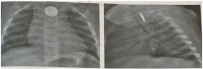
A Observação clínica e radiografia controle em 24 horas.
B Remoção endoscópica de urgência.
C Induzir vômito para eliminação do corpo estranho
D Remoção de urgência por broncoscopia.
Questão 90 · Crise de sequestro esplênico · 4000182103Criança de 2 anos, com anemia falciforme, é levada pelos pais ao pronto socorro com queixa de dor abdominal importante e em membros. Mãe refere que criança iniciou com tosse, coriza e febre há 2 dias e refere que hemoglobina basal da criança geralmente ca em torno de 8 g/dL. Ao exame: prostrada, palidez importante, febril, ictérica. Frequência cardíaca 180 bpm, frequência respiratória 30 ipm, saturação de oxigênio 96%, PA 80 x 50 mmHg. Fígado a 2 cm do rebordo costal direito a baço a 8 cm do rebordo costal esquerdo. Exames laboratoriais: Hb 2,9 g/dL; Ht 11% VCM 78; HCM 21,8; plaquetas 68 mil/ul; GB 14 mil/ul (3% bastonetes); contagem de reticulócitos: 17,43% (VR: 0,5 - 2,1%); bilirrubinas: total 2 mg/dL; direta 0,4 mg/dL; LDH: 1827 U/L(VR: 85 - 227 U/L). Diante deste cenário, qual é a hipótese diagnóstica?
A Anemia aplástica.
B Crise vaso oclusiva.
C Sequestro esplênico.
D Síndrome torácica aguda.
Revisar: possível letra faltando em enunciado
Questão 91 · Pediatria · Avaliando o desenvolvimento · 4000182102Durante uma consulta de rotina de puericultura, a mãe de uma criança de 8 meses relata que está preocupada porque o seu lho ainda não consegue sentar sem apoio. A criança nasceu a termo e não há outras queixas; teste do pezinho: sem alterações. Você observa, durante a consulta, que a criança necessita de auxílio para passar da posição supina para a sentada, mas uma vez nessa posição permanece estável, sem cair. Restante do exame físico sem alterações. Qual a melhor conduta?
A Manter retorno regular de puericultura.
B Solicitar dosagem sérica de TSH e T4 livre.
C Solicitar eletroneuromiografia e dosagem sérica de CPK.
D Solicitar tomografia computadorizada de crânio.
Questão 92 · Ânion Gap · Acidose metabólica com ânion gap aumentado · 4000182101Manif estações clínicas da acidose metabólica Pré-escolar de 4 anos cocm história de trauma contuso em membro inferior esquerdo há 5 dias, evoluiu com febre, associada a edema, hiperemia, dor e calor no membro dá 2 dias. Há 12 horas, encontra-se apático e alternando irritabilidade com sonolência. Chega à sala de emergência com frequência cardíaca 160 bpm, frequência respiratória 30 ipm, pressão arterial 70//20 mmHg, saturação de oxigênio 95%, tempo de enchimento capilar menor que 1 segundo, com extremidades quentes e avermelhadas e pulsos bem amplos. Os exames laboratoriais mostram: pH 7,30, PO² 100mmHg, PCO² 30 mmHg, bicarbonato 15 mEq/L, base excess 10, sódio 140 mEq/l, potássio 4,0 mEq/L, cloro 103 mEq/L. Qual é o diagnóstico do distúrbio acidobásico?
A Acidose metabólica de ânion gap aumentado e alcalose respiratória.
B Acidose metabólica de ânion gap normal.
C Acidose metabólica de ânion gap normal e alcalose respiratória.
D Acidose metabólica de ânion gap aumentado.
Questão 93 · Conceito · Laboratório da hemostasia · 4000182100Menino de 3 anos é trazido à consulta pediátrica com história de hematoma em perna direita desproporcional após trauma na região. Mãe refere equimoses e epistaxes ocasionais. Nega outras queixas e história familiar de sangramento. Ao exame: Hematoma de 6 x 6 cm em região de panturrilha direita. Equimose em axila esquerda de 2 x 3 cm e em região dorsal de 3 x 4 cm. Ausência de petéquias. Restante do exame físico sem alterações. Exames complementares: Hb: 12,5 g/dL, GB: 7.600/ul (48% neutrófilos, 52% linfócitos), plaquetas: 245.000/uL. TTPA ratio: 1,1 (VR < 1,3); TP INR: 2,4 (VR < 1,2); TT ratio: 1,1 (VR < 1,2). Com base na história e exames acima, qual é o diagnóstico mais provável?
A Deficiência do fator V ou X.
B Deficiência do fato VIII, IX ou XI.
C Doença de von Willebrand
D Deficiência do fator VII.
Questão 94 · DDS46XYinsensibilidade androgênica ou def eito no receptor androgênico · Pediatria · 4000182099Você examina um recém-nascido, primeiro lho de um casal jovem, saudável e sem consanguinidade. Foi uma gestação muito aguardada e todo o acompanhamento pré-natal foi completo e sem intercorrências. Entretanto, aos 6 meses de gestação realizaram também um exame de sexagem fetal, cujo o resultado (46,XY) foi discrepante dos achados da ultrassonogra a fetal. Durante o exame físico, você não encontra nenhuma outra anormalidade aparente e o exame da região genital é mostrado na figura abaixo. O exame ultrassonográ co não encontrou útero e demais derivados Mullerianos. Considerando que o resultado do exame citogenético seja de fato confirmado, qual é o provável diagnóstico desta criança?
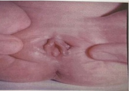
A Síndrome de resistência androgênica.
B Hiperplasia adrenal congênita por deficiência de 21 hidroxilase.
C Síndrome de Rokitansky (Mayer Rokitansky Kuster Hauser).
D Disgenesia gonadal mista.
Revisar: possível letra faltando em enunciado
Questão 95 · Temas Gerais em Cirurgia · Cirurgia · 4000182098Um pré-escolar de 5 anos e 20 kg, foi internado para o tratamento de pneumonia bacteriana adquirida na comunidade. Devido à inapetência e para prevenção de broncoaspiração, foi indicada alimentação por sonda nasogástrica. Após a passagem da sonda pela enfermagem, foi realizada a seguinte radiografia Qual a conduta imediata mais apropriada?
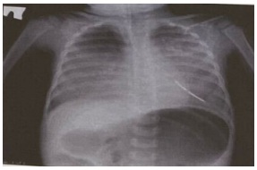
A Introduzir mais a sonda.
B Injetar ar sob ausculta.
C Liberar a sonda para uso.
D Retirar a sonda
Questão 96 · Diagnóstico · Pediatria · 4000182097Menina de 10 anos apresenta dor e edema em tornozelos e lesões cutâneas, principalmente em membros inferiores e nádegas, há 5 dias (foto), sem nenhuma outra queixa. O restante do exame físico está sem alteração. Há 20 dias, apresentou quadro de infecção respiratória. Exames complementares: Hb: 14 g/dL, GB: 7.200/mm³ (40% neutró los, 60% linfócitos), plaquetas: 480.000/mm³, VHS 40 mm/1 hora, proteína C reativa 3 mg/dl (VR: abaixo de 0,5 mg/dl(, urina rotina sem alterações. Ultrassonogra a de abdome normal. Além de observar a evolução do quadro, qual a conduta terapêutica nesse momento?
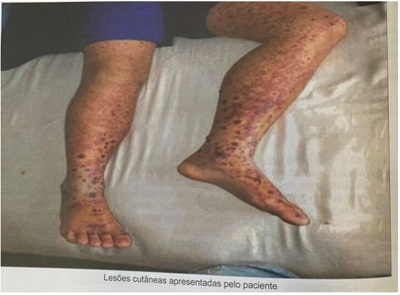
A Analgésico.
B Corticoide.
C Dapsona.
D Tacrolimus.
Questão 97 · Tratamento de Manutenção · Tratamento de manutenção da asma · Pneumologia · 4000182096Criança de 7 anos de idade, diagnosticada com asma aos 6 anos, com base na história clínica e espirometria. Nega uso de medicações de uso contínuo. Nos últimos 6 meses, vem apresentando tosse e dispneia diariamente e despertar noturno, devido à tosse, 3 vezes por semana. Como deve ser o tratamento inicial?
A Corticoide inalado associado a teofilina.
B Corticoide inalado associado a montelucaste
C Corticoide inalado associado a beta 2 de ação prolongada.
D Corticoide inalado associado a imunobiológico.
Questão 98 · Comunicação interventricular · 4000182095Criança de 8 anos, sexo feminino, vem a consulta devido a arroxeamento dos lábios e unhas, além de cansaço durante esforços físicos. Esses episódios começaram há cerca de 1 anos e estão se tronando mais frequentes. Nega internações prévias e quadros de chiados no peito. Familiar refere que no primeiro ano de vida, época em que fez puericultura, foi observado sopro sistólico e desconforto respiratório, porém médico disse que paciente devia ter "algum buraquinho no coração que fecharia sozinho". Refere também que sentia uma vibração torácica em região de rebordo esternal esquerdo baixo, mas que desapareceu ao longo dos anos. Qual hipótese diagnóstico deve ser investigada?
A Transposição de grandes artérias.
B Comunicação interatrial.
C Tetralogia de Fallot.
D Síndrome de Eisenmenger
Questão 99 · Cirurgia Inf antil · Cirurgia · Íleo Paralítico · 4000182094Criança de 5 anos, queixa-se de vômitos 3 vezes ao dia há 3 dias, acompanhados de diarreia aquosa de médio volume, 5 vezes ao dia. Hoje a mãe notou que a criança está apática, com dor abdominal e diminuição das evacuações. Não está se alimentando adequadamente. Exame físico: regular estado geral, descorado +/4+, febril, hidratado. Aparelho respiratório: sem alterações. Aparelho cardiovascular: 2 bulhas rítmicas normofonéticas sem sopros, FC: 130 bpm, PA: 90 x 50 mmHg, pulsos cheios, tempo de enchimento capilar> 2 segundos. Abdome: distensão abdominal, com dor à palpação difusa e ruídos hidroaéreos diminuídos. Exames laboratoriais: Na: 135 mEq/L, K: 2,9 mEq/L, Ca iônico: 1/2 mg/dl. Escala de alvarado modificada: 3. Qual a hipótese diagnóstica?
A Constipação intestinal.
B Íleo paralítico
C Apendicite aguda.
D Adenite mesentérica.
Questão 100 · Quadro clínico da leucemia linf oide aguda LLA · Diagnóstico da leucemia linf oide aguda LLA · 4000182093Menino de 8 anos, previamente hígido, apresenta quadro de dor intensa nos joelhos e tornozelos, que o impede de caminhar. Refere que o quadro iniciou há 30 dias, com piora progressiva. A dor é pior no período noturno e o acorda algumas vezes durante a noite. Nega traumas ou infecções recentes, Perdeu 2 quilos no período. Ao exame físico: regular estado geral, fácies de dor, adenomegalia cervical e inguinal com gânglios de até 2 cm, bilaterais, não coalescentes, de consistência broelástica. Dor intensa e limitação à movimentação de joelhos e tornozelos, sem edema ou outras alterações. Exames complementares iniciais: Hb; 10 g/dL, GB: 3.200/mm³ (20% neutró los, 80% linfócitos), plaquetas: 240.000/mm³, VHS 50 mm/1 hora, proteina C reativa 7 mg/dl (VR: abaixo de 0,5 mg/dl). Com relação à principal hipótese diagnóstica, qual o exame a ser solicitado nesse momento? Respostas: 1 12 23 34 45 56 67 78 89 100
A Ecocardiograma.
B Anticorpo antinuclear.
C Análise de líquido sinovial.
D Mielograma.